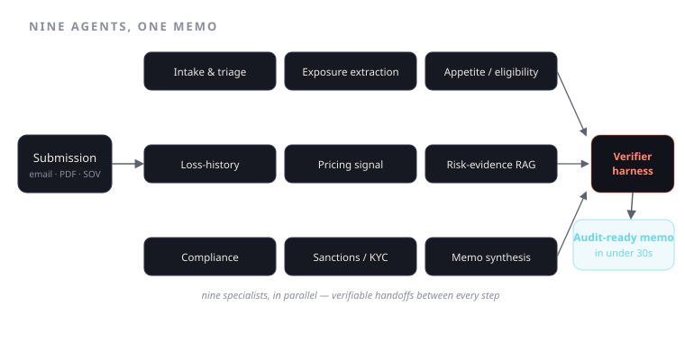

Nine Agents, One Memo: Architecting Audit-Ready Underwriting
Nine specialist agents read a submission in parallel and hand you a decision memo in under thirty seconds — and every line of it is something you can defend to a regulator.
An underwriter at a Lloyd's syndicate opens a submission and starts reading. A broker email, a loss run as a scanned PDF, a schedule of values in a spreadsheet that doesn't match last year's format, a SOV with a tab nobody named. Somewhere in that pile is the answer to one question: do we want this risk, and at what price? The reading takes an hour on a good day. The thinking takes longer. And at the end, if a regulator or a reinsurer asks why you priced it that way, you'd better be able to point at something more durable than a gut call.
Vortic turns that hour into under thirty seconds and ends it with a decision memo you can hand to an auditor. The trick is not a bigger model. It's the shape of the system around it: nine specialist agents working in parallel, handing off through a layer that verifies rather than trusts, with a conversational copilot sitting on top so the underwriter can interrogate the result instead of taking it on faith. The model was the easy part. The coordination layer is the product.

Why a swarm and not a megaprompt
The lazy version of this is one giant prompt: paste the submission, ask for a recommendation, ship it. It demos beautifully and falls apart on contact with a real book. A single pass conflates jobs that have different failure modes — extracting a number off a smudged loss run is a different kind of task than judging whether a risk sits inside your appetite, which is different again from checking a sanctions list. Bundle them and you can't tell where the answer went wrong, only that it did. In underwriting, "it's wrong somewhere" is not an acceptable audit trail.
So we split the work into nine specialists, each with a narrow remit, a defined input contract, and an output that the next agent can check. Speed comes from running them in parallel where the dependency graph allows. Auditability comes from the fact that each one leaves a labelled, inspectable artifact behind. You get both at once because they come from the same design decision — decomposition — not from trading one against the other.
The nine, and how they hand off
The agents fall into roughly three waves:
- Intake & triage — normalizes the mess. Classifies documents, pulls structured fields off the loss run, the SOV, the broker narrative, and flags what's missing before anyone wastes a cycle on an incomplete submission.
- Exposure analysis — turns the schedule into quantified exposure: aggregations, concentrations, the geographic and occupancy picture.
- Appetite & eligibility — the first real judgment call. Does this risk sit inside the carrier's stated appetite? Cleanly inside, cleanly outside, or in the grey band that needs a human.
- Risk-evidence gathering — goes out for the corroborating signal: external data, prior-loss context, anything that supports or contradicts the broker's framing.
- Pricing signal — assembles the inputs a pricing decision actually rests on. Not a final number handed down from a black box — a defensible signal with its assumptions exposed.
- Compliance & audit — sanctions, regulatory, and policy checks. The agent whose job is to say no, not like this.
- Memo synthesis — composes the audit-ready decision memo: recommendation, rationale, and the evidence chain underneath every claim.
The remaining specialists handle cross-cutting concerns — reconciling conflicts between agents when two of them disagree about the same fact, and the verification pass that gates the whole thing. Nine specialists, one memo.
The handoffs are where most agent systems quietly rot. Agent A produces a number, Agent B assumes it's right, and a hallucinated total value propagates all the way into the recommendation with nobody the wiser. We don't allow that.
The deterministic verifier layer
Between the agents sits a layer that does not reason. It checks.
When the exposure agent claims a total insured value, the verifier confirms that number actually sums from the line items in the SOV — deterministically, in code, not by asking a model "does this look right." When the compliance agent clears a named entity, the verifier confirms the check ran against the real list and returns the evidence. When pricing rests on an assumption, that assumption is recorded as a checkable claim, not a vibe.
This is the line between a demo and something you'd let touch a bound policy. A probabilistic system that's right 95% of the time is a liability in underwriting, because the 5% arrives without a flag. The deterministic verifier turns "the model is usually right" into "every load-bearing number has been independently confirmed, and the ones that couldn't be are marked." When the verifier can't confirm something — a join it can't make, a field the submission never provided — it doesn't paper over the gap. It surfaces it as an open item in the memo. The honest answer to "are these reconciled?" is sometimes "I can't prove it yet," and a system that says so is worth more than one that guesses confidently.
That's what makes the memo audit-ready. Not that a model wrote a fluent paragraph — anything can do that now. It's that every claim in the memo traces to either a verified computation or an explicitly flagged uncertainty. An auditor doesn't want prose. They want the join key.
Where Hermes fits
The memo is the artifact. Hermes is how you argue with it.
Hermes is the conversational copilot that sits across the whole run. An underwriter doesn't have to accept the recommendation as a verdict from on high — they can ask why is this priced here, what did the appetite agent flag, show me the line items behind that exposure number, what happens if I exclude this location. Because every agent left an inspectable artifact and every number carries its provenance, Hermes answers from the actual evidence chain, not from a fresh hallucination. The underwriter stays the decision-maker. The swarm did the reading; Hermes makes its reasoning legible; the human makes the call.
That ordering matters in a regulated business. The goal was never to remove the underwriter. It was to give them back the hour they spend reading and hand them a defensible starting point instead of a blank page.
Nine agents go in. One memo comes out. The thirty seconds is the headline, but the audit trail is the moat — because in underwriting, a fast wrong answer is worse than a slow one, and the only thing better than speed is speed you can defend.